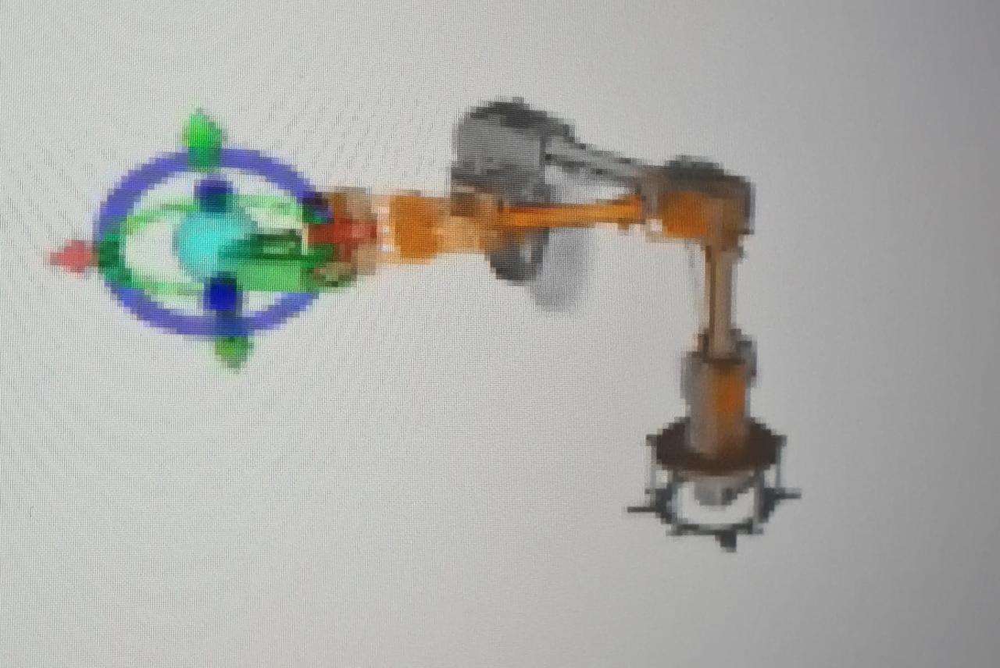

← Selected work
Human–robot interaction / 2024 – 2025
Building a collaborative robot
Bringing a robot arm, perception, and conversational interfaces into a shared workspace.
- Context
- Engineering project · TH Köln
- Period
- April 2024 – March 2025
- My work
- Robot programming · Perception · Interface prototyping
The idea
Collaborative robots need more than motion control: they need a way to understand their workspace and communicate with the person beside them. This project brought those elements together around a Lynxmotion arm.
My contribution
- Programmed the Lynxmotion arm in ROS 2 using nodes, topics, publish/subscribe communication, and services in Python and C++.
- Prototyped audio interfaces and visual displays, using retrieval-augmented LLMs to generate responses.
- Implemented machine perception with an Azure Kinect camera and computer vision to observe the interaction space.
- Worked within Docker and GitLab workflows and explored the effects of the arm’s limited degrees of freedom.
Connecting interaction and control
The project gave me practical experience integrating robot software, perception, and human–robot interfaces into one collaborative prototype, while working with the physical constraints of a limited-DOF arm.

